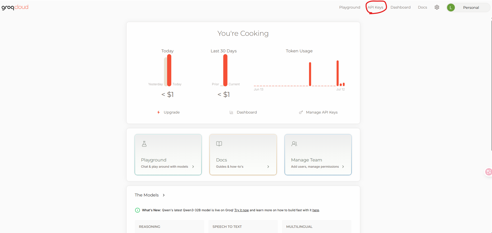
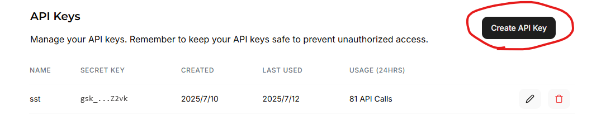

GroqAPI金鑰取得教學
前言
大語言模型(LLM)如果要用自己的電腦跑服務倒也不是不行，以現在大多數的地端模型來說要不就很慢，要不就很笨，所以如果要真正將專案導入AI進行使用的話，我的建議還是尋求比較聰明的模型進行API嫁接服務，當然OPENAI也有提供相關的API使用，但就是會需要一筆費用就是了，至於GROQ他就是可以提供比較聰明的開源大語言模型然後反應速度又很快的一家服務商，他所提供的GroqAPI服務有一些基本限制，但若要進行小專案的API串接已經很OK了!
步驟
進入網站
https://console.groq.com/keys
點選登入
小技巧:你也可以登入之後直接輸入上述網站就會到取得金鑰的地方
支援各種登入方式
- Github
建立 API key
 
取得API Token
完成頁面
- 這一串API_TOKEN就可以拿來給其他的程式做使用了!!
範例
可用模型
語言模型：
- llama-3.1-405b-reasoning
- llama-3.1-70b-versatile
- llama-3.1-8b-instant
- llama3-groq-70b-8192-tool-use-preview
- llama3-groq-8b-8192-tool-use-preview
- llama3-70b-8192
- llama3-8b-8192
- mixtral-8x7b-32768
- gemma-7b-it
- gemma2-9b-it
語音模型（Whisper）：
- whisper-large-v3
- whisper-large-v3-turbo
多模態／影像模型：
- meta-llama/llama-4-scout-17b-16e-instruct
- meta-llama/llama-4-maverick-17b-128e-instruct
語音轉文字範例
1 | from groq import Groq |
文字任務範例
1 | def chat_with_model(user_input): |